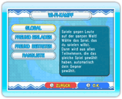

In Dr. Mario kannst du mithilfe der Nintendo Wi-Fi Connection gegen andere Spieler aus der ganzen Welt antreten. Wähle dazu NINTENDO WFC aus dem Modusauswahl-Bildschirm und danach Wi-Fi-KAMPF.
Hinweis: Der RESET-Knopf an der Wii-Konsole kann nicht verwendet werden, solange eine Verbindung zur Nintendo Wi-Fi Connection besteht.
| GLOBAL |
Spiele gegen Spieler aus der ganzen Welt! Wähle die Variante, die du spielen möchtest, und dir wird automatisch ein Gegner zugeteilt, der die gleiche Variante gewählt hat. Deine Siege und deine Wertung für dieses Spiel werden gespeichert. |
| FREUND EINLADEN |
Spiele mit Freunden aus deiner Freundesliste. Wähle aus, welches Spiel du spielen möchtest, lade einen Freund ein und leg los! Deine Siege und die Wertung für dieses Spiel werden nicht gespeichert. |
| FREUND BEITRETEN |
Spiele mit Freunden aus deiner Freundesliste. Wähle das Spiel, das du spielen möchtest, und tritt einem vorbereiteten Kampf bei. Deine Siege und deine Wertung für dieses Spiel werden nicht gespeichert. |
| RANGLISTE |
Hier siehst du deinen Wi-Fi-Rang. |
Hinweis: Du musst zuvor mindestens einen Freund in deiner Freundesliste registriert haben, um einen FREUND EINLADEN oder einem FREUND BEITRETEN zu können. Wähle FREUNDESEINSTELLUNGEN auf dem Nintendo WFC-Menübildschirm, um Freundescodes zu registrieren.